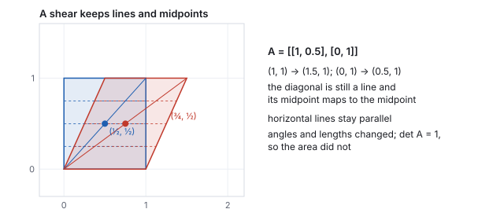
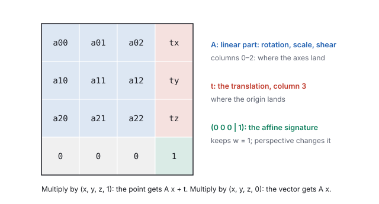
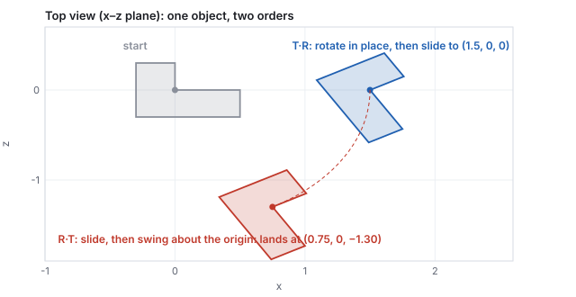
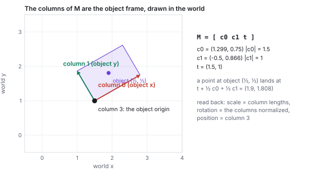
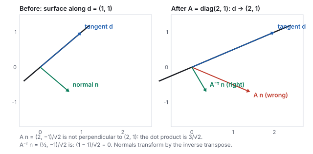
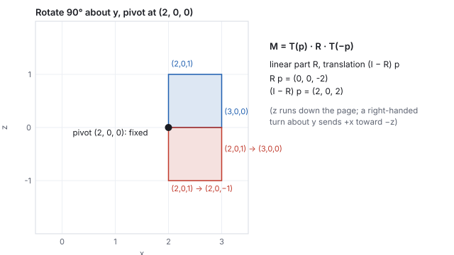
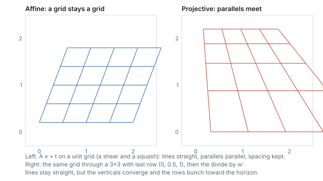

This chapter links to the course’s interactive demos and uses MathJax for its
formulas. Read it through the course website (or download the file and open it in a
browser); a Canvas inline preview will reach neither the demos nor the math.
All chapters.
Affine Transformations over Homogeneous Coordinates
CSS 551 · Advanced 3D Computer Graphics · course text
Course text · the family every placement transform belongs to, the lift that makes it one matrix, and the two block formulas that do all the work. Assigned by your offering’s course site; pairs with the lecture on affine transformations.
To place a model in a scene you translate, rotate, scale and sometimes shear it, in some order, and then undo those operations for picking and for cameras. All of these are one kind of map, an affine map: a linear part and a shift. This chapter names the family and what it preserves, lifts it into homogeneous coordinates so that the whole family becomes a single \(4\times4\) matrix, and then derives from two block formulas everything the pipeline needs: why composition order matters, the inverse, a matrix read as a coordinate frame, the TRS decomposition engines store (and the shear it cannot hold), the rule for transforming normals, pivots, and finally the boundary of the family, where the perspective matrix leaves it. Every number is computed by the course’s own transform library.
Definition (affine map)
\[
f(\mathbf{x}) = A\,\mathbf{x} + \mathbf{t}, \qquad A \in \mathbb{R}^{3\times3} \text{ (the linear part)},\quad \mathbf{t}\in\mathbb{R}^3 \text{ (the translation)}.
\]
A linear map is the case \(\mathbf{t} = 0\); it fixes the origin. Translation is the one
thing a matrix alone cannot do, and the \(+\,\mathbf{t}\) is what makes the family affine.
What affine maps preserve
Lines go to lines; parallel lines stay parallel; ratios of lengths along a line are kept
(a midpoint maps to the midpoint of the image). Lengths and angles are not preserved
in general; they are only when \(A\) is orthogonal (a rotation or reflection).

A shear is the honest example: it breaks angles and lengths (the square leans) while keeping every line straight and every midpoint a midpoint. A triangle mesh survives any affine map as a triangle mesh for exactly this reason.
Worked example (the shear, and a midpoint)
\(A = \begin{pmatrix} 1 & 0.5 \\ 0 & 1\end{pmatrix}\): \((1,1)\mapsto(1.5, 1)\), \((0,1)\mapsto(0.5, 1)\), \((1,0)\mapsto(1,0)\).
The diagonal from \((0,0)\) to \((1,1)\) maps to the segment from \((0,0)\) to \((1.5,1)\), and the
midpoint \((\tfrac12,\tfrac12)\) maps to \((0.75, 0.5)\), which is the midpoint of that image. The
angle at the origin changed from \(45^\circ\) to \(\arctan(1/1.5) = 33.7^\circ\).
1.1 The determinant: volume and handedness
\(\det A\) is the factor by which \(A\) scales volume, and its sign says whether handedness
flipped. Computed by the library:
\(A\)
\(\det A\)
meaning
\(\mathrm{diag}(2, 1, 1)\)
\(2\)
twice the volume
\(R_y(60^\circ)\)
\(1\)
a rotation keeps volume and handedness
\(\mathrm{diag}(-1, 1, 1)\)
\(-1\)
a mirror: same volume, right hand to left hand
the shear above
\(1\)
area kept, shape not
a zero scale
\(0\)
a dimension collapsed; no inverse
A negative determinant turns every counter-clockwise triangle clockwise, which is why a model
imported with one negative scale factor renders inside out: its windings flipped and its
normals now point in.
A displacement (the arrow between two points, a velocity, a normal) feels only the linear part. Under a pure translation it does not change at all.
A position is a place and moves with the world; a direction has no place and must not
move when the world is shifted. Section 2 makes the matrix enforce this automatically.
2 · Homogeneous coordinates: the lift
Append a \(1\) to every point, \((x, y, z)\mapsto(x, y, z, 1)\), and pack \(A\) and \(\mathbf{t}\)
into one \(4\times4\) matrix:
Definition (the homogeneous matrix of an affine map)
\[
\begin{pmatrix} A & \mathbf{t} \\ \mathbf{0}^{\mathsf T} & 1 \end{pmatrix}
\begin{pmatrix} \mathbf{x} \\ 1 \end{pmatrix}
= \begin{pmatrix} A\mathbf{x} + \mathbf{t} \\ 1 \end{pmatrix},
\qquad
\begin{pmatrix} A & \mathbf{t} \\ \mathbf{0}^{\mathsf T} & 1 \end{pmatrix}
\begin{pmatrix} \mathbf{v} \\ 0 \end{pmatrix}
= \begin{pmatrix} A\mathbf{v} \\ 0 \end{pmatrix}.
\]
A point carries \(w = 1\) and is moved by the translation; a
vector carries \(w = 0\) and the translation column is multiplied away.

The four blocks. The bottom row \((0\;0\;0\;|\;1)\) is the signature of an affine matrix: it keeps \(w = 1\). Section 9 is about what happens when a matrix changes it.
This is the entire engineering reason for \(4\times4\) matrices in graphics: translation,
rotation, scale and shear become one data type with one multiply, one inverse, and one
upload to the GPU. The \(w\) arithmetic is a pleasant type check: point minus point gives
\(w = 0\), a vector; point plus vector gives \(w = 1\), a point.
Worked example (move a point, not a vector)
\(T\) = translate by \((2, 0, 0)\), whose fourth column is \((2, 0, 0, 1)\).
\[
T\,(0, 0, 0, 1)^{\mathsf T} = (2, 0, 0, 1)^{\mathsf T} \;\text{(the origin moved)}, \qquad
T\,(1, 0, 0, 0)^{\mathsf T} = (1, 0, 0, 0)^{\mathsf T} \;\text{(the direction did not)}.
\]
One line of arithmetic proves the convention: the zero in \(w\) killed the translation column.
3 · Composition, and why order matters
Do \(f(\mathbf{x}) = A\mathbf{x} + \mathbf{t}\), then \(g(\mathbf{x}) = B\mathbf{x} + \mathbf{s}\):
The block product
\[
\begin{pmatrix} B & \mathbf{s} \\ \mathbf{0}^{\mathsf T} & 1 \end{pmatrix}
\begin{pmatrix} A & \mathbf{t} \\ \mathbf{0}^{\mathsf T} & 1 \end{pmatrix}
= \begin{pmatrix} BA & B\mathbf{t} + \mathbf{s} \\ \mathbf{0}^{\mathsf T} & 1 \end{pmatrix},
\qquad \text{first } A \text{ (nearest the point), then } B .
\]
The linear parts multiply. The translations do not simply add: the first translation is
pushed through the second linear part before the second translation is added. Order
matters, and it matters through the translation term.
On column vectors, the matrix nearest the vector acts first, so a product \(B\cdot A\) means
“\(A\) first, then \(B\)” and is read right to left, the same convention as the
quaternion product in the rotation chapter.
Worked example (\(T\cdot R\) and \(R\cdot T\) from the block formula)
\(T\) = translate by \(\mathbf{t} = (1.5, 0, 0)\); \(R = R_y(60^\circ)\), \(\cos 60^\circ = 0.5\), \(\sin 60^\circ = 0.866\).
\(T\cdot R\)
second map \(T\): \(B = I\), \(\mathbf{s} = \mathbf{t}\); first map \(R\): \(A = R\), translation \(0\). Linear part \(R\); translation \(I\cdot 0 + \mathbf{t} = (1.5, 0, 0)\).
\(R\cdot T\)
second map \(R\): \(B = R\), \(\mathbf{s} = 0\); first map \(T\): \(A = I\), translation \(\mathbf{t}\). Linear part \(R\); translation \(R\,\mathbf{t} = (1.5\cos60^\circ, 0, -1.5\sin60^\circ) = (0.75, 0, -1.299)\).
\[
T\cdot R = \begin{pmatrix} 0.5 & 0 & 0.866 & 1.5 \\ 0 & 1 & 0 & 0 \\ -0.866 & 0 & 0.5 & 0 \\ 0 & 0 & 0 & 1 \end{pmatrix}, \qquad
R\cdot T = \begin{pmatrix} 0.5 & 0 & 0.866 & 0.75 \\ 0 & 1 & 0 & 0 \\ -0.866 & 0 & 0.5 & -1.299 \\ 0 & 0 & 0 & 1 \end{pmatrix}.
\]
Same linear part, different translation column. Rotate then translate drops the move in as
is; translate then rotate swings the move by \(60^\circ\), so the object lands on an arc of
radius \(1.5\) instead of at \((1.5, 0, 0)\). Both matrices are the library’s
matMul(makeTRS(…), makeTRS(…)), and they are what the demo’s panels print.

One object, two orders, seen from above. The blue copy rotated about its own center and slid over; the red copy slid out and then swung around the world origin on a lever arm.
See it liveOrder matters:
two cubes built from the same \(T\) and \(R\) in opposite orders, with all four matrices
printed. Compare column 3 of the two products while you drag.
The block inverse
\[
\begin{pmatrix} A & \mathbf{t} \\ \mathbf{0}^{\mathsf T} & 1 \end{pmatrix}^{-1}
= \begin{pmatrix} A^{-1} & -A^{-1}\mathbf{t} \\ \mathbf{0}^{\mathsf T} & 1 \end{pmatrix},
\qquad (B\cdot A)^{-1} = A^{-1}\cdot B^{-1} .
\]
For a rigid transform (\(A = R\) a rotation) \(R^{-1} = R^{\mathsf T}\), so the inverse
costs a transpose and one matrix-vector product: \(\big[\,R^{\mathsf T},\; -R^{\mathsf T}\mathbf{t}\,\big]\).
Scale inverts by reciprocals; a zero scale has no inverse.
The reversal rule for products is the socks-then-shoes rule: to undo, take the shoes off
first. The two uses that matter most: bringing a world point into an object’s own
frame for a hit test (Section 5), and the view matrix, which is the inverse of the
camera’s placement.
Worked example (invert \(M = T(2,0,0)\cdot R_y(90^\circ)\))
\(R_y(90^\circ)\) has columns \((0,0,-1)\), \((0,1,0)\), \((1,0,0)\), and \(\mathbf{t} = (2,0,0)\).
\[
M = \begin{pmatrix} 0 & 0 & 1 & 2 \\ 0 & 1 & 0 & 0 \\ -1 & 0 & 0 & 0 \\ 0 & 0 & 0 & 1 \end{pmatrix}, \qquad
M^{-1} = \begin{pmatrix} 0 & 0 & -1 & 0 \\ 0 & 1 & 0 & 0 \\ 1 & 0 & 0 & -2 \\ 0 & 0 & 0 & 1 \end{pmatrix}.
\]
The linear part of \(M^{-1}\) is \(R^{\mathsf T}\) (rows of \(R\) become columns). Its translation is
\(-R^{\mathsf T}\mathbf{t}\): the rows of \(R^{\mathsf T}\) are the columns of \(R\), so
\(R^{\mathsf T}\mathbf{t} = \big((0,0,-1)\cdot\mathbf{t},\; (0,1,0)\cdot\mathbf{t},\; (1,0,0)\cdot\mathbf{t}\big) = (0, 0, 2)\),
negated \((0, 0, -2)\). The library’s invertTRS returns exactly this matrix, and
\(M\cdot M^{-1}\) evaluates to the identity in every entry.
5 · A matrix is a frame; object and world space
Feed the matrix the basis vectors and the origin, in homogeneous form:
A matrix is an affine frame
Columns 0 to 2 are where the object’s axes land in the world (vectors); column 3 is
where its origin lands (a point). Given any placement matrix in a debugger: the position is
column 3 verbatim, the object’s world-space axes are the other columns, and their lengths
are its scale factors.

Two dimensions for legibility. \(M = [\,\mathbf{c}_0\;\mathbf{c}_1\;\mathbf{t}\,]\) with \(\mathbf{c}_0 = (1.299, 0.75)\), \(\mathbf{c}_1 = (-0.5, 0.866)\), \(\mathbf{t} = (1.5, 1)\): a frame rotated \(30^\circ\), stretched \(1.5\times\) along its own \(x\), placed at \((1.5, 1)\). A point at object coordinates \((\tfrac12, \tfrac12)\) lands at \(\mathbf{t} + \tfrac12\mathbf{c}_0 + \tfrac12\mathbf{c}_1 = (1.9, 1.808)\).
Every object has its own frame, the one its mesh was authored in (a cube’s corners at
\(\pm\tfrac12\), forever). The model matrix \(M\) is the bridge:
\(\mathbf{p}_{\text{world}} = M\,\mathbf{p}_{\text{object}}\) places the mesh without touching its
vertices, and \(\mathbf{p}_{\text{object}} = M^{-1}\mathbf{p}_{\text{world}}\) brings a world point (a
mouse ray’s hit, another object’s position) into the object’s frame for tests like
“is this point inside me”. In Unity, transform.localPosition lives in the
parent’s frame and transform.position in the world; the difference is exactly the
parent chain, which the scene-graph chapter (in preparation) composes.
6 · TRS, and the shear it cannot store
Any invertible \(A\) factors as a rotation times a symmetric stretch, \(A = R\,S\) (the polar
decomposition). Engines store the special case in which the stretch is axis-aligned:
\[
M = T\cdot R\cdot S, \qquad \text{columns 0 to 2} = \text{the rotated axes, each scaled by its factor}, \quad \text{column 3} = \mathbf{t}.
\]
Worked example (read a TRS matrix back)
The library’s makeTRS(1,2,3, 0,60,0, 2,1,0.5) is
\[
M = \begin{pmatrix} 1 & 0 & 0.433 & 1 \\ 0 & 1 & 0 & 2 \\ -1.732 & 0 & 0.25 & 3 \\ 0 & 0 & 0 & 1 \end{pmatrix}.
\]
Column lengths: \(\|(1, 0, -1.732)\| = 2\), \(\|(0,1,0)\| = 1\), \(\|(0.433, 0, 0.25)\| = 0.5\): the
scale \((2, 1, 0.5)\). Normalize the columns: \((0.5, 0, -0.866)\), \((0,1,0)\), \((0.866, 0, 0.5)\),
the columns of \(R_y(60^\circ)\). Column 3 is \((1, 2, 3)\). This read-back is the first step of
invertTRS.
An affine map has twelve degrees of freedom (nine in \(A\), three in \(\mathbf{t}\)). A
Transform stores nine: position, a rotation (three degrees of freedom, as a quaternion), and
three scale factors. The missing three are shear: \(T\cdot R\cdot S\) cannot
represent a sheared object. This is not academic. A child rotated \(45^\circ\) under a parent
scaled non-uniformly is sheared in world space; Unity’s Transform cannot hold that
matrix, and its lossyScale property is the honest admission that the world-space scale
it reports is an approximation.
7 · Normals transform by the inverse transpose
A tangent direction \(\mathbf{d}\) is a difference of points and transforms by \(A\). A normal
is defined by being perpendicular to tangents, and \(A\mathbf{n}\) is not, in general,
perpendicular to \(A\mathbf{d}\). What is: \(A^{-\mathsf T}\mathbf{n}\), because
\((A\mathbf{d})\cdot(A^{-\mathsf T}\mathbf{n}) = \mathbf{d}^{\mathsf T}A^{\mathsf T}A^{-\mathsf T}\mathbf{n} = \mathbf{d}\cdot\mathbf{n} = 0\).

A non-uniform scale is the case that exposes the bug. For a rotation \(A^{-\mathsf T} = A\), so nothing goes wrong until the first squashed model.
Worked example (the wrong normal and the right one)
\(A = \mathrm{diag}(2, 1, 1)\); surface along \(\mathbf{d} = (1, 1, 0)\); normal
\(\mathbf{n} = (1, -1, 0)/\sqrt2 = (0.707, -0.707, 0)\).
Then renormalize. The illumination shaders of the illumination chapter (in preparation) do exactly this, or approximate it when the inverse is unavailable.
8 · Pivots
\(R\) spins about the origin. To spin about a point \(\mathbf{p}\), bring \(\mathbf{p}\) to the origin,
rotate, and send it back, and apply the block product of Section 3:
\[
M = T(\mathbf{p})\cdot R\cdot T(-\mathbf{p}) \;=\; \begin{pmatrix} R & \mathbf{p} - R\mathbf{p} \\ \mathbf{0}^{\mathsf T} & 1 \end{pmatrix}
= \begin{pmatrix} R & (I - R)\,\mathbf{p} \\ \mathbf{0}^{\mathsf T} & 1 \end{pmatrix}.
\]
\(\mathbf{p}\) is the fixed point: \(T(-\mathbf{p})\) sends it to the origin, \(R\) leaves the origin,
\(T(\mathbf{p})\) returns it. Swap \(R\) for \(S\) to scale about a point. Every off-center
rotation, joint articulation and scale-about-a-corner is this conjugation, and the
translation column \((I - R)\mathbf{p}\) is a number nobody would enter by hand, which is why
the sandwich is built rather than typed.

A right-handed quarter turn about the vertical through \((2, 0, 0)\); \(z\) runs down the page.
Worked example (pivot at \((2,0,0)\), \(90^\circ\) about \(y\))
\(R\mathbf{p} = 2\cdot\text{column 0 of } R_y(90^\circ) = (0, 0, -2)\), so \((I - R)\mathbf{p} = (2,0,0) - (0,0,-2) = (2, 0, 2)\):
\[
M = \begin{pmatrix} 0 & 0 & 1 & 2 \\ 0 & 1 & 0 & 0 \\ -1 & 0 & 0 & 2 \\ 0 & 0 & 0 & 1 \end{pmatrix}, \qquad
M(2,0,0) = (2, 0, 0),\;\; M(3,0,0) = (2, 0, -1),\;\; M(2,0,1) = (3, 0, 0).
\]
The pivot stays; a neighbor one unit in \(+x\) swings to \(-z\); one unit in \(+z\) swings to \(+x\).
9 · Where affine ends
Homogeneous coordinates are defined only up to scale: \((x, y, z, w)\) and \((\lambda x, \lambda y, \lambda z, \lambda w)\)
name the same point, \((x/w, y/w, z/w)\). An affine matrix never changes \(w\), so the divide is
invisible. A general \(4\times4\) whose last row is not \((0,0,0,1)\) does change it, and the map
it defines after the divide is projective: lines still go to lines, but parallel
lines can meet and ratios along a line are not kept.

Two dimensions, homogeneous \(3\times3\). Left, an affine map. Right, the last row \((0, 0.5, 1)\) makes \(w = 1 + 0.5\,y\), and the divide pulls far rows together: perspective.
Worked example (the divide, in two dimensions)
With last row \((0, 0.5, 1)\), a point \((x, y)\) lifts to \((x, y, 1)\), maps to \((x, y, 1 + 0.5y)\), and
divides to \(\big(x/(1 + 0.5y),\; y/(1 + 0.5y)\big)\):
in
\(w\)
out
\((1, 0)\)
1
\((1, 0)\)
\((1, 1)\)
1.5
\((0.667, 0.667)\)
\((1, 2)\)
2
\((0.5, 1)\)
Equal steps in \(y\) (0, 1, 2) become unequal steps out (0, 0.667, 1), and the vertical line
\(x = 1\) leans toward \(x = 0\) as \(y\) grows: parallels meet at a vanishing point, which no
affine map can do.
Three consequences. The perspective projection of the viewing chapter deliberately writes
\(-z\) into \(w\), so that dividing by \(w\) divides by depth and distant things shrink; it is
the one non-affine matrix in the pipeline, and the divide by \(w\) is its signature. A
vector with \(w = 0\) is, in this language, a point at infinity: a direction is where
parallel lines meet, which is why directions never move under translation. And the
library’s invertTRS refuses a matrix whose last row is not \((0,0,0,1)\), because
the block inverse of Section 4 only holds inside the affine family.
10 · Exercises
Exercise 1 (composition)
\(S\) = scale by \((2, 2, 2)\), \(T\) = translate by \((1, 0, 0)\). Compute the translation column of \(T\cdot S\) and of \(S\cdot T\), and say where the origin lands under each.
Solution
\(T\cdot S\): \(B = I\), so the column is \(I\cdot0 + (1,0,0) = (1,0,0)\); the origin lands at \((1,0,0)\). \(S\cdot T\): \(B = 2I\), column \(2I\cdot(1,0,0) + 0 = (2, 0, 0)\); the origin lands at \((2,0,0)\). Scaling after translating scales the translation too.
Exercise 2 (inverse)
Invert \(M = T(0, 3, 0)\cdot R_z(90^\circ)\) by the block formula and check on the point \(M(1,0,0)\).
Solution
\(R_z(90^\circ)\) has columns \((0,1,0), (-1,0,0), (0,0,1)\); \(R^{\mathsf T}\mathbf{t} = \big((0,1,0)\cdot(0,3,0),\; (-1,0,0)\cdot(0,3,0),\; 0\big) = (3, 0, 0)\), so the inverse has linear part \(R^{\mathsf T}\) and translation \((-3, 0, 0)\). Forward: \(M(1,0,0) = R(1,0,0) + \mathbf{t} = (0,1,0) + (0,3,0) = (0,4,0)\). Back: \(R^{\mathsf T}(0,4,0) + (-3,0,0) = (4, 0, 0) + (-3, 0, 0) = (1, 0, 0)\).
Exercise 3 (read a frame)
A matrix has columns \((0, 2, 0)\), \((-3, 0, 0)\), \((0, 0, 1)\), \((5, 5, 5)\). Give its position, scale, and rotation, and say whether it is right-handed.
Solution
Position \((5,5,5)\); scale \((2, 3, 1)\) from the column lengths; normalized columns \((0,1,0), (-1,0,0), (0,0,1)\) are \(R_z(90^\circ)\). Determinant of the normalized part is \(+1\) (a rotation), so right-handed; with the scale, \(\det = 6 > 0\).
Exercise 4 (normals)
A model is scaled by \(\mathrm{diag}(1, 1, 3)\). A face normal was \((0, 0.707, 0.707)\). Find the correct world-space normal.
Solution
\(A^{-\mathsf T} = \mathrm{diag}(1, 1, \tfrac13)\): \((0, 0.707, 0.236)\), renormalized \((0, 0.949, 0.316)\). Stretching along \(z\) makes the surface flatter, so its normal tilts toward \(y\), away from the stretch; the naive \(A\mathbf{n} = (0, 0.707, 2.121)\) tilts the wrong way.
Exercise 5 (pivot)
Scale by \(2\) about the point \((1, 1, 0)\). Write the matrix by the block formula and check that the pivot is fixed and that \((2, 1, 0)\) maps to \((3, 1, 0)\).
Solution
Linear part \(2I\); translation \((I - 2I)\mathbf{p} = -\mathbf{p} = (-1, -1, 0)\). \(M(1,1,0) = (2,2,0) + (-1,-1,0) = (1,1,0)\), fixed. \(M(2,1,0) = (4,2,0) + (-1,-1,0) = (3,1,0)\): the point one unit right of the pivot is now two units right.
Exercise 6 (projective)
With the \(3\times3\) of Section 9, where does the point \((1, 6)\) land, and what point does the vertical line \(x = 1\) approach as \(y\to\infty\)?
Solution
\(w = 1 + 3 = 4\): \((0.25, 1.5)\). As \(y\to\infty\), \(x/(1 + 0.5y)\to0\) and \(y/(1 + 0.5y)\to 2\): the line approaches \((0, 2)\), the vanishing point shared by every vertical line.